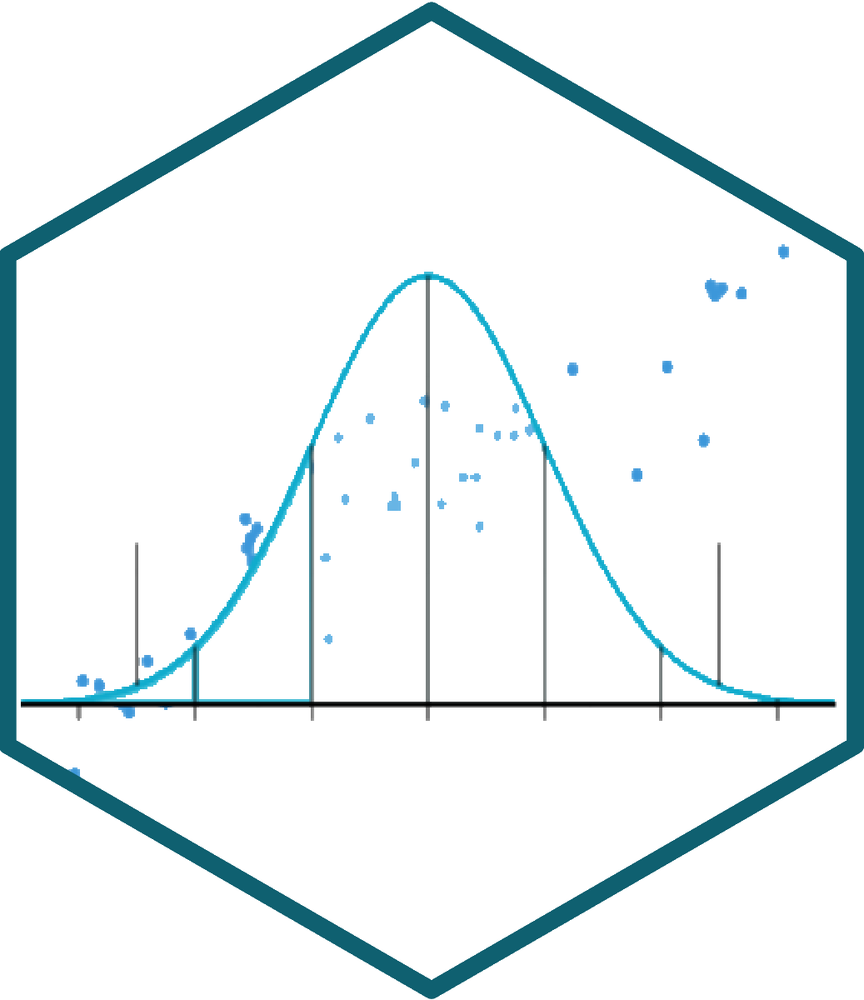
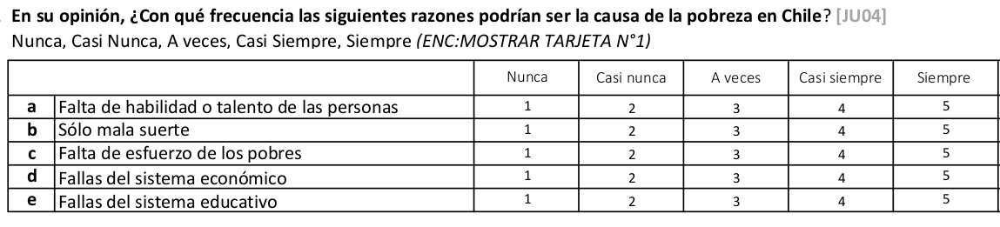
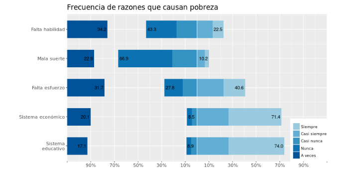
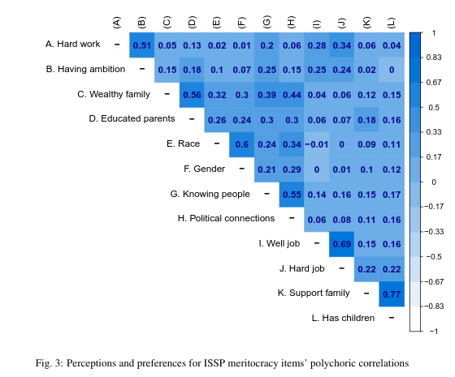
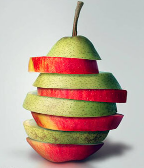
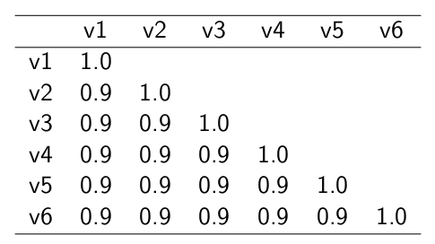
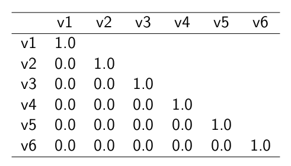
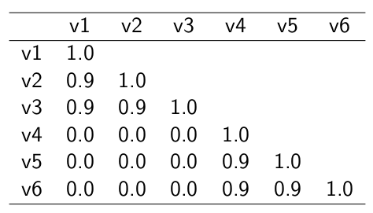

data$educ[1] 2 3 4 4 5 7 8 8
Inferencia, asociación, y reporte
Juan Carlos Castillo
Sociología FACSO - UChile
2do Sem 2026
correlacional.metodos-facso.org
Sesión 10:
Correlación en ordinales, matrices e índices
1. Correlación con variables ordinales
2. Matrices de correlación
3. Casos perdidos en matrices
4. Baterías, matrices y consistencia
5. Construcción de índices
se utiliza para variables ordinales y/o cuando se violan supuestos de distribución normal
es equivalente a la correlación de Pearson del ranking de las observaciones analizadas
es alta cuando las observaciones tienen un ranking similar
se le asigna un número de ranking a cada valor
el valor más bajo obtiene el mayor ranking, y el más alto el menor
en caso de valores repetidos se produce un “empate”, y entonces el ranking se promedia.
Como estos valores están ordenados de menor a mayor, en principio los valores de ranking serían:
8 7 6 5 4 3 2 1.
Pero, hay un par de empates
el valor 4 está repetido y corresponden a los ranking 6 y 5, por lo tanto a ambos se les asigna el promedio de estos rankings: 5,5
lo mismo sucede con el valor 8 en los rankings 2 y 1, por lo tanto a ambos se les asigna el valor 1,5
educ ing educ_rank ing_rank
1 2 1 8.0 8.0
2 3 3 7.0 6.5
3 4 3 5.5 6.5
4 4 5 5.5 4.0
5 5 4 4.0 5.0
6 7 7 3.0 3.0
7 8 9 1.5 2.0
8 8 11 1.5 1.0[1] 0.9394112Recomendado cuando hay un set de datos pequeños y/o cuando hay mucha repetición de observaciones en el mismo ranking
Se basa en una comparación de pares de observaciones concordantes y discordantes
Datos (5 casos ⇒ 10 pares de comparaciones)
| Caso | X | Y |
|---|---|---|
| P1 | 1 | 3 |
| P2 | 2 | 1 |
| P3 | 3 | 4 |
| P4 | 4 | 5 |
| P5 | 5 | 2 |
\(Pares=\frac{n(n-1)}{2}=\frac{5*4}{2}=10\)
| # | Par | (Xi, Yi) | (Xj, Yj) | ΔX | ΔY | sgn(ΔX) | sgn(ΔY) | Clasificación |
|---|---|---|---|---|---|---|---|---|
| 1 | (P1,P2) | (1,3) | (2,1) | +1 | -2 | + | - | Discordante |
| 2 | (P1,P3) | (1,3) | (3,4) | +2 | +1 | + | + | Concordante |
| 3 | (P1,P4) | (1,3) | (4,5) | +3 | +2 | + | + | Concordante |
| 4 | (P1,P5) | (1,3) | (5,2) | +4 | -1 | + | - | Discordante |
| 5 | (P2,P3) | (2,1) | (3,4) | +1 | +3 | + | + | Concordante |
| 6 | (P2,P4) | (2,1) | (4,5) | +2 | +4 | + | + | Concordante |
| 7 | (P2,P5) | (2,1) | (5,2) | +3 | +1 | + | + | Concordante |
| 8 | (P3,P4) | (3,4) | (4,5) | +1 | +1 | + | + | Concordante |
| 9 | (P3,P5) | (3,4) | (5,2) | +2 | -2 | + | - | Discordante |
| 10 | (P4,P5) | (4,5) | (5,2) | +1 | -3 | + | - | Discordante |
Número total de pares: \(C + D + \text{(empates)} = 6 + 4 + 0 = 10\).
Tau-a (sin empates):
\[ \tau_a = \frac{C - D}{pares} = \frac{6 - 4}{10} = 0.20 \]
Tau-b (corrige empates):
\[ \tau_b = \frac{C - D}{\sqrt{(C + D + T_x)(C + D + T_y)}} = \frac{6 - 4}{\sqrt{(10 + 0)(10 + 0)}} = 0.20 \]
Interpretación: \(\tau = 0.20\) indica una asociación positiva débil: hay más pares que mantienen el orden entre \(X\) y \(Y\) que pares que lo invierten.
Pearson es el coeficiente de correlación por defecto
En caso de datos en escala de medición ordinal se puede aplicar Spearman (aunque Pearson es también aceptado en este contexto).
Kendall se reporta en casos muy específicos donde hay un set de datos pequeños y repetición de observaciones en el mismo ranking (“empates”)
1. Correlación con variables ordinales
2. Matrices de correlación
3. Casos perdidos en matrices
4. Baterías, matrices y consistencia
5. Construcción de índices
una matriz de correlación se conforma cuando se representa simultáneamente más de un par de asociaciones bivariadas
por ejemplo, si agregamos la variable edad a nuestra base de datos de educ e ingreso:
tabla de doble entrada donde las variables se presentan tanto en las filas como en las columnas
el coeficiente de correlación correspondiente al par de variables aparece en la intersección de las columnas
existe información redundante
Función: tab_corr
corrplotcorrplot: númeroscorrplot: triángulo inferiorcorrplot.mixedcorrplot: coeficientes sobre colorescorrplot: método square1. Correlación con variables ordinales
2. Matrices de correlación
3. Casos perdidos en matrices
4. Baterías, matrices y consistencia
5. Construcción de índices
Cuando hay casos perdidos en las variables, ¿cuál es el número de casos de la matriz de correlaciones?
Las correlaciones bivariadas se calculan con información completa, por lo tanto si hay un dato perdido en una de las variables se elimina el caso completo
Algunas funciones lo hacen de manera automática, en otras hay que especificarlo previamente
Agreguemos un caso perdido (NA en R) a una de nuestras variables
use = "complete.obs" (listwise deletion)las correlaciones bivariadas requieren eliminación de casos perdidos tipo listwise, es decir, si hay un dato perdido en una variable se pierde el caso completo
Para conocer el número de casos con que se calculó la matriz:
Por lo tanto, en el cálculo se perdió el caso o fila completa de la base (de 8 casos) que tenía el caso perdido.
en el caso de las matrices de correlaciones es posible tomar la opción pairwise para casos perdidos
pairwise quiere decir que se eliminan los casos perdidos solo cuando afectan al cálculo de un par específico.
en nuestro ejemplo, si consideramos listwise todas las correlaciones tienen 7 casos, pero con pairwise la correlación entre educación e ingreso mantendría 8 casos.
por lo tanto, pairwise permite mayor rescate de información y mayor N en el cálculo de matrices de correlaciones
educ ing edad
educ 1.0000000 0.9512367 -0.6693607
ing 0.9512367 1.0000000 -0.4941732
edad -0.6693607 -0.4941732 1.0000000En este caso vemos una leve variación en el coeficiente comprometido (educ-ing) comparando listwise con pairwise
educ ing edad
educ 8 8 7
ing 8 8 7
edad 7 7 7Se indica que en las correlaciones con edad se utilizaron 7 casos, mientras en la correlación entre ingreso y educación se utilizan 8 casos con el método pairwise
1. Correlación con variables ordinales
2. Matrices de correlación
3. Casos perdidos en matrices
4. Baterías, matrices y consistencia
5. Construcción de índices

Para medir hechos observables simples usualmente se utiliza una pregunta (ej: edad)
Fenómenos complejos se miden en general con más de una pregunta, con el objetivo de dar mejor cuenta del atributo (i.e. minimizar error de medición)
en general las encuestas suelen incluir varias preguntas respecto de un mismo tema → baterías de indicadores múltiples
cubren distintos aspectos de un mismo fenómeno complejo que no se agota en solo un indicador → minimiza error de medición
problema: ¿cómo se analizan indicadores que están relacionados? ¿cómo se muestran los resultados?

(likert plot, sjPlot)
2. Bivariado: tablas/gráficos de correlaciones
(corrplot)

Se podría asumir un concepto o dimensión subyacente a la batería de items
Para facilitar el avance en el análisis (por ejemplo, relacionar ese concepto subyacente con otras variables), muchas veces se reduce la batería a algún tipo de índice (sumativo/promedio)
¿Podemos asegurar que los items están realmente midiendo lo mismo?
En este marco se asume que el indicador es distinto del atributo, y que la medición del atributo o variable latente conlleva error
Cuando el atributo se mide con más de una pregunta, se puede intentar estimar la variable latente mediante índices o técnicas de análisis factorial

antes de agrupar indicadores en un índice hay que evaluar si los indicadores se encuentran relacionados
¿Cómo estimar el nivel de relación entre indicadores que miden un mismo constructo?
Distintas maneras, pero todas se basan en la técnica de la correlación

Matriz hipotética de indicadores que miden un mismo constructo

Matriz hipotética de indicadores que miden constructos independientes

Matriz hipotética de variables que miden dos constructos independientes
Analizar la matriz de correlaciones antes de generar cualquier técnica de reducción de información (ej: crear índice)
Evaluar la posibilidad de generar algún tipo de índice que resuma la información
| var | label | n | NA.prc | mean | sd | range | |
|---|---|---|---|---|---|---|---|
| 2 | falthab | Razones pobreza falta de habilidad | 1228 | 1.365462 | 2.630293 | 1.254220 | 4 (1-5) |
| 3 | malasue | Razones pobreza mala suerte | 1227 | 1.445783 | 2.019560 | 1.140079 | 4 (1-5) |
| 1 | faltesf | Razones pobreza falta de esfuerzo | 1238 | 0.562249 | 3.155897 | 1.290758 | 4 (1-5) |
| 4 | sisecon | Razones pobreza sistema económico | 1218 | 2.168675 | 4.036946 | 1.095047 | 4 (1-5) |
| 5 | siseduc | Razones pobreza sistema educativo | 1227 | 1.445783 | 4.088835 | 1.088767 | 4 (1-5) |
falthab malasue faltesf sisecon siseduc
falthab 1 NA NA NA NA
malasue NA 1 NA NA NA
faltesf NA NA 1 NA NA
sisecon NA NA NA 1 NA
siseduc NA NA NA NA 1Esta función no resulta ya que requiere que no existan casos perdidos
Entonces:
falthab malasue faltesf sisecon siseduc
falthab 1.000000000 0.31793357 0.36246039 -0.02787884 -0.005893529
malasue 0.317933565 1.00000000 0.16936872 0.02755708 0.013865045
faltesf 0.362460395 0.16936872 1.00000000 -0.06579454 -0.020114542
sisecon -0.027878843 0.02755708 -0.06579454 1.00000000 0.593625639
siseduc -0.005893529 0.01386504 -0.02011454 0.59362564 1.000000000| Falta de habilidad |
Mala suerte | Falta de esfuerzo |
Sistema económico |
Sistema educativo |
|
|---|---|---|---|---|---|
| Falta de habilidad |
|||||
| Mala suerte | 0.318*** | ||||
| Falta de esfuerzo |
0.356*** | 0.162*** | |||
| Sistema económico |
-0.030 | 0.027 | -0.066* | ||
| Sistema educativo |
-0.002 | 0.016 | -0.026 | 0.594*** | |
| Computed correlation used pearson-method with pairwise-deletion. | |||||
1. Correlación con variables ordinales
2. Matrices de correlación
3. Casos perdidos en matrices
4. Baterías, matrices y consistencia
5. Construcción de índices
índice de consistencia interna de una batería
en general, interpretable como la correlación [absoluta] promedio entre distintas variables que componen una batería de medición
varía entre 0 y 1; valores más cercanos a 1 indican mayor consistencia
en general valores sobre 0.6 se consideran aceptables
función alpha de la librería psych
se genera un objeto (lo llamaremos alpha). Contiene bastante información, por ahora nos enfocaremos solo en el valor de alpha (raw_alpha)
[1] "falthab" "malasue" "faltesf" "sisecon" "siseduc"Some items ( falthab malasue faltesf ) were negatively correlated with the first principal component and
probably should be reversed.
To do this, run the function again with the 'check.keys=TRUE' option[1] 0.4363206puntaje 0.43, por lo tanto bajo los valores aceptables de consistencia interna
esto ya se podía anticipar desde la matriz de correlaciones, que aparentemente mostraba dos dimensiones subyacentes a la batería
además, se genera un mensaje de advertencia sobre posibles items codificados a la inversa (dada la correlación entre items de dimensiones distintas)
construcción de índices basados en la información de la matriz de correlaciones
análisis factorial:
[1] "falthab" "malasue" "faltesf" "sisecon" "siseduc"
[6] "interna_prom" "externa_prom"Correlación de Spearman: apropiada para variables ordinales, equivale a la correlación de Pearson del ranking de las variables
Matriz de correlaciones: forma tradicional de reporte de asociaciones de las variables de una investigación, importante considerar tratamiento de datos perdidos (listwise o pairwise)
Índices y consistencia interna en matrices
Inferencia, asociación, y reporte
Juan Carlos Castillo
Sociología FACSO - UChile
2do Sem 2026